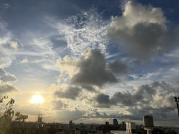
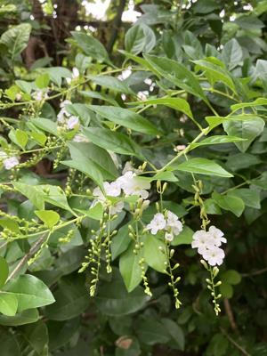
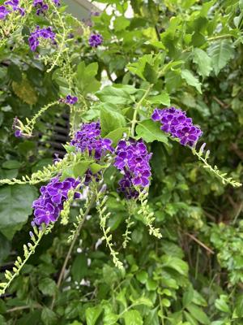

うるがいの話 ある日
最新: タイワンレンギョウ【うるがいの話 ある日】とは 一日だけのプログです
『うるがいの話』の最新一日だけのプログで、通信料が少なく経済的だ。カニの画像をクリックすると全ての日付が載る『うるがいの話』サイトを表示します
|
|
【うるがいの話】 うるがい(ｳﾙｶﾞｲ urugai)とは、『もずくがに』の名前でとても大きくなります。 |
|---|---|
|
|
【カミマヤーの話】 猫のことを方言でマヤーといいます。カミマヤー（kamimayaa）とは、神の猫のことです。 |
|
【たながぁの音楽】 たながぁ（ﾀﾅｶﾞｰ tanagaa）とは手長えびのことで、何種類かあり大きいのは車 エビぐらいになります。 |

|
【ぶながぁの話】 ぶながぁ(ﾌﾞﾅｶﾞｰ bunagaa)とは、赤い髪の毛、赤い身体、そして身長は１ｍ２０ｃｍ ぐらい、川の蟹を食べているの目撃された。場所は沖縄県国頭郡大宜味村のと ある村僕の隣近所に住んでいる爺さんから、聞いた話です。 |
|
|
【ギーマの話】 ギーマ(giima)とは、山原の里山に咲くスズランに似た、 花を付けます。実は食べられます、 気が付くと口の周りが紫になっています。 |
2024年08月08日 (木）タイワンレンギョウ
15:41

白い花をつけるレンギョウ、はて花の名前あたっているかしら？とネットで
調べる。シロバナタイイワンレンギョウ（白花台湾連翹）、フムフム、英名
をデュランタというらしい。紫は？、ただのタイイワンレンギョウ。レンギ
ョウは、黄色い花だった。
 
真珠のプログラムで戯れているとき、ＰＣ１のディスクトップに貼り付けて
いたメモのファイルを探すが無い！、アレアレ・・・、数時間努力する。ア
１月にハードディスクを丸ごとバックアップしていたＳＳＤを使えばともう
一台のＰＣ２に接続して中身を参照するが、アクセス制限がかかる。ホーと
ＰＣ１に接続、コマンドを打ち込むと確かにあった、・・・・でメモファイ
ルは消えてなく、それのショートカットをディスクトップに貼り付けてそれ
を、削除したようだ。バックアップで実際に助かったのは、今回が初めてだ
だった。確認したかったメモは、
１６進数の置換
2024.07.21
# $line =~ s/0x09/0x20/g; 実行できない！宿題
↑解決
$line =~ s/\x09/\x20/g; #OK
#NG if($line =~ /0x09/){
if($line =~ /\x09/){ #OK
０ｘでなく、￥ｘだった。ネットでも答えを探せなかった。
その後、ChatGPTと対談した（答えは分かっていたが）
使用プログラミング言語はPerlです
16進数 x0920 を null
にするロジックを教えてください。
ずれた答えが返ってきたので、数回やりとしたが諦める。
１５時３０分 ビットコインの総資産 ￥２４、２５８（↓２９６）